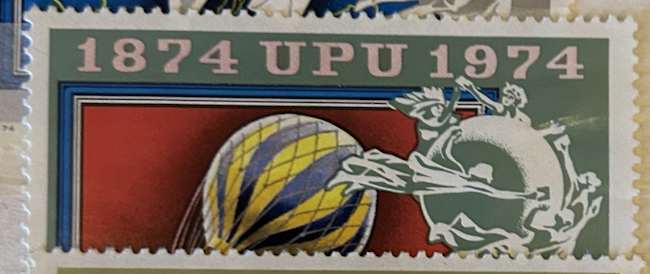
| SOURCE | TITLE| IMAGE MATCH | click to source page |
| Find Your Stamps Value | Value of 1874 upu 1974 magyar posta stamps | 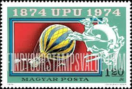 |
| HipStamp | Hungary 2285 Balloon Post and World Map 1974 | Europe - Hungary, General Issue Stamp / HipStamp | 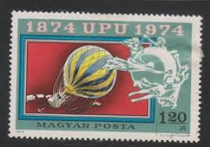 |
| libertyhighschoolalumni.com | Liberty High School Class of 1988 | 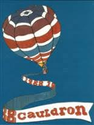 |
| Classmates.com | 1988 yearbook from Liberty High School from Bethlehem, Pennsylvania | |
| eBay | 8- Smithsonian 1955 USG Hot Air Balloon Print Collection 12-1/4 X 8-1/4 Each | eBay | 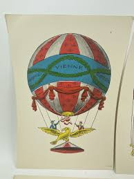 |
| eBay | Around the World in 80 Days 1956 | eBay | 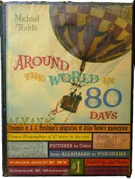 |
| Fandom | KPM 73 - Around The World In 80 Minutes 4 | Production Music Wiki | Fandom | 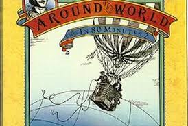 |
| AbeBooks | MICHAEL TODD'S AROUND THE WORLD IN 80 DAYS by S.J. PERELMAN\'S ADAPTATION OF THE JULES VERNE CLASSIC: Very Good Hardcover (1956) | ALEXANDER POPE | 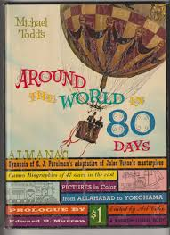 |
| Etsy | Hot Air Balloons, Air Shows, Circus, Vintage Giclée Reproduction of "italia" C1880 - Etsy Hong Kong | 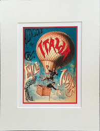 |
| eBay | QUICKSILVER DAILY FLASH 1966 AVALON BALLROOM FAMILY DOG POSTER MOUSE FD-35(3) | eBay | 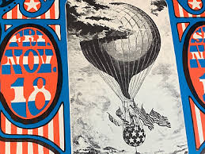 |
| House of Gaud | 1986 Hot Air Jubilee Signed Print by Maggie LaNoue – House of Gaud | 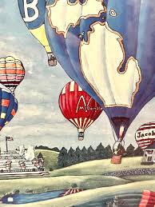 |
| Classmates.com | 1976 yearbook from Kennedy High School from Cedar rapids, Iowa | 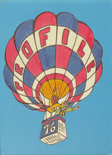 |
| Amazon.com | Amazon.com: Around The World In 80 Days Almanac: The Story of the World's Most Honored Show: 9781199524850: cohn, art: Libros | 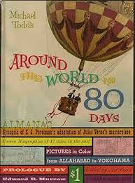 |
| Christie's | VAULX, Comte de la, TISSANDIER, Paul and DOLLFUS, Charles. L'Aéronautique des origines à 1922. Paris: H. Floury, 1922. 2o (382 x 277 mm). Plates and facsimiles, some in color. Original limp decorated | 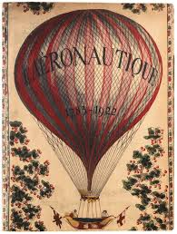 |
| Etsy | Poster the Daily Flash Avalon Ballroom FD35 Family Dog First Print 1966 Poster - Etsy | 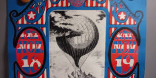 |
| eBay | AOP) Austria 1978 Balloon Post Exhibition card with label | eBay | 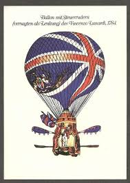 |
| biblio.com | Michael Todd's around the World in 80 Days Almanac by Todd, Michael, Cohn, Art, Edited By | Oversize laminated Bds. | 1956 | Random House | Biblio | 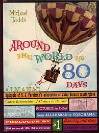 |
| Wikipedia | Wikipedia:Main Page history/2022 October 31 - Wikipedia | 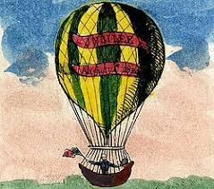 |
| WorthPoint | 2 H. Hargrove Bi-Plane Balloons Air Show SIGNED 3 Times | #128625302 | 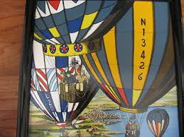 |
| Bethlehem Area Public Library | Items · Liberty High School Collection · Bethlehem Area Public Library | 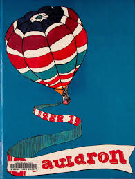 |
| Dreamstime.com | 116 Upu Serie Stock Photos - Free & Royalty-Free Stock Photos from Dreamstime | 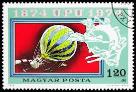 |
| The Reading Well Bookstore | MICHAEL TODD'S AROUND THE WORLD IN 80 DAYS ALMANAC | 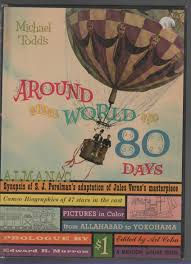 |
| Etsy | Stanley Mouse Daily Flash 1966 San Francisco FD-35 Concert Poster - Etsy | 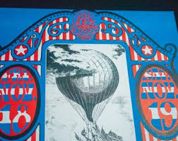 |
| LiveAuctioneers | Stamps Centenary Anniversary Commemorative Panels Binder Lot | 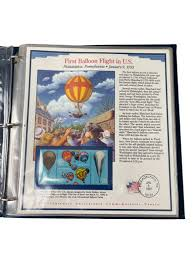 |
| Londonist | When A French Woman Rode Over London On The Back Of Floating Bull | Londonist | 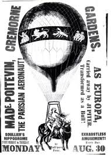 |
| AbeBooks | Grandmother's Doll by Bouton, Elizabeth Gladwin; Illustrated by Helene Carter: Very Good Hard Cover (1931) First Edition. | Nighttown Books | 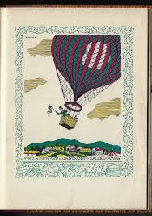 |
| Invaluable.com | Sold at Auction: Ralph Cahoon, RALPH EUGENE CAHOON, JR., Cape Cod, 1910-1982, Sailors and mermaids enjoying a balloon ride over a seaside village., Oil on masonite... | 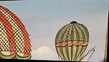 |
| eBay | HOW COME NOBODYS ON OUR SIDE? Movie Poster (Fine-) 1SH '74 Hot Air Balloon 24456 | eBay | 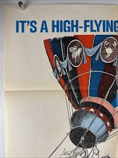 |
| place-des-arts.com | Jean-Paul GRIFFOULIERE (1946 - ) - Place-des-Arts | 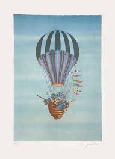 |
| rhinoceros-group.com | Rhinoceros - Daily Flash | 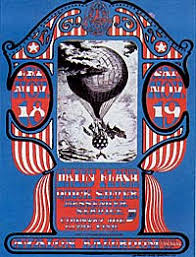 |
| Smithsonian Institution | Le Tricolore. Aérostat de 800 mêtres cubes, Diamêtre 11m 53. | National Air and Space Museum | 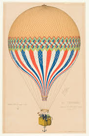 |
| eBay | 8- #'d Smithsonian 1955 USG Hot Air Balloon Print Collection 8-1/4 X 6-1/4 “ | eBay | 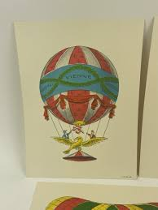 |
| eBay | H. Hargrove Canvas Oil Painting 10”X 12” - Balloon Farm- COA/Appraised | eBay | 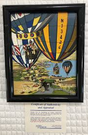 |
| Etsy | Michael Todd's Around the World in 80 Days Almanac - Etsy | 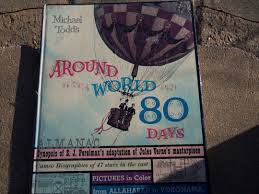 |
| Target | Unusually Grand Ideas - by James Davis May (Paperback) : Target | |
| Etsy | VintagePaperology - Etsy | 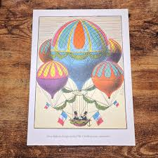 |
| uncleodiescollectibles.com | ORIGINAL FIVE WEEKS IN A BALLOON CONCEPT ART #05 | 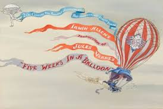 |
| eBay | Bareuther Bavaria Hot Air Balloon Plate,1850 Unusual 5 Balloon Assembly Exhibit | eBay | 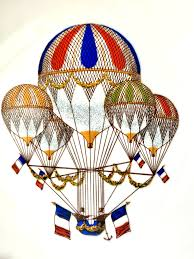 |
| AuctionNinja | Pair Of Antique Hand Colored Framed Lithographs "premier Voyage Aerien" And "ascension" #40731100 | Auctionninja.com | 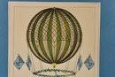 |
| Classic Posters | February 2020 Classic Rarities Auction | 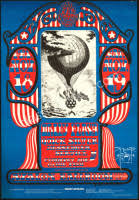 |
| MUSEUM OUTLETS | Tricolor Vintage Hot Air Balloon Aviation Poster — MUSEUM OUTLETS | 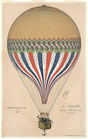 |
| eBay | RARE 1956 Around The World In 80 Days Almanac - SIGNED By Shirley MacLaine! | eBay | 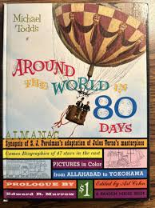 |
| eBay | BALLOONS., Dollfus, Charles., Used; Very Good Book 1962 | eBay | 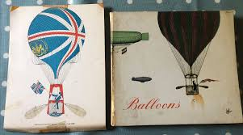 |
| Twitterイラスト検索。Buhitter ! | Todd'sのTwitterイラスト検索結果。 | 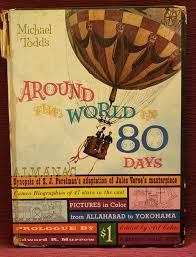 |
| eBay | 2nd anniversary IPA Postcards by Bernard Pradignac 1989 | eBay | 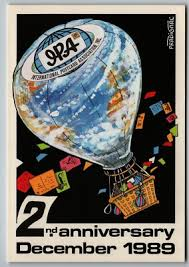 |
| eBay | First Day of Issue First World Hot Air Balloon Championship 1973 Albuquerque FDC | eBay | 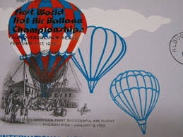 |
| Rawpixel | Vintage Hot Air Balloon Illustrations Images | Free Photos, PNG Stickers, Wallpapers & Backgrounds - rawpixel | 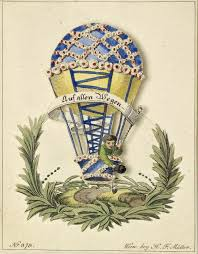 |
| Wikipedia | File:Early flight 02562u (6).jpg - Wikipedia | 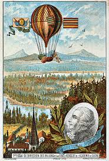 |
| 72point5 Promotions | 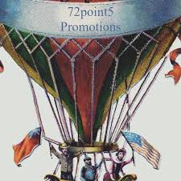 | |
| Smithsonian | Balloonamania: Up, Up, and Away | Smithsonian Institution | 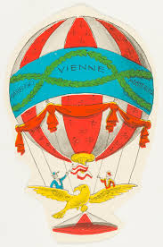 |
| The Movie Database (TMDB) | Paul Godkin — The Movie Database (TMDB) | 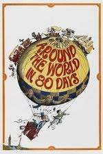 |
| Smithsonian Institution | An Exact Model of The Vauxhall Royal Balloon,...First ascent, with 9 Persons, made from Vauxhall September 9th, 1836. | National Air and Space Museum | |
| WorthPoint | Framed Balloon Print~ Ballon von Charles (Charliere) ~ Grafiche Tassotti ~ Italy | #478900000 | |
| eBay | 1930's Van Orman and Walter W. Morton Balloon Race # 38 United States Card | eBay | |
| Allposters | First Attempt by Guyton De Morveau to Direct a Balloon, Dijon, France, 1784 Giclee Print | AllPosters.com | |
| myCast | Nassim Lyes Fan Casting | |
| Fine Art America | Hot Air Balloon Italy tour, vintage travel poster Poster by Long Shot - Fine Art America | |
| Carney set to spend much of 2026 travelling the world in search of trade : r/CanadaCultureClub | ||
| Amazon.com | Amazon.com: GHTYER Canvas Wall Art PostersHot Air Balloon Poster Le Tricolore French Balloon Drawing Balloon Print Vintage Balloon Canvas Painting Home Wall Decoration for Bedroom Kitchen and Office 12x18inch: Posters & Prints |
.jpg){kind=link}